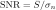
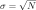
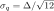
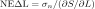
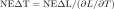
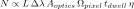
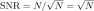
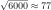

, so longer dwell time, larger optics or wider bands improve it.
, so longer dwell time, larger optics or wider bands improve it.Definition

. Noise sources: photon shot noise (
for collected electrons), dark current, read-out noise, quantization (
collected electrons), dark current, read-out noise, quantization (
for step ).
).

: the radiance change equal to one noise standard deviation.
for thermal bands (typical 0.05–0.1 K).
Derivation
Collected photo-electrons

. With shot noise only,
. A pushbroom has dwell time equal to the line time (ground pixel / ground speed), a whiskbroom only that divided by the number of pixels per line: for 6000 pixels per line the pushbroom collects 6000 times more photons,
times better SNR.Intuition
Measurement precision is a photon count: the more photons per pixel, the smaller their random fluctuation relative to the signal.
Pitfall
Quantizing with more bits than the SNR supports only records noise more finely; conversely a sensor with excellent SNR but 8-bit quantization wastes it.